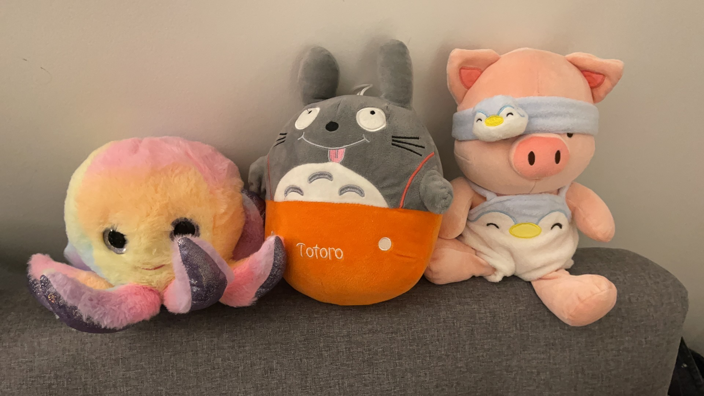

Topdown 2D Pixel Battle-royale Game
Ongoing
A topdown pixel online multiplayer party gameplay experience, cross-platform, leisure development, for sale.
2022-2023, Associated with Spectrum Forge Game Dev Community
Introduction
This project is still ongoing, therefore to respect my and my team's works and copyrights, I may not expose too many details.
This project was collaboratively designed and built with iterations by the Spectrum Forge Game Development Community, founded and directed by me (to learn more it, you may click here)
The initial force propelling us to work on this project is extremely naive and simple.
We all love building games, so we decided to make a fun game where:
- We could experiment creative ideas to innovate or blend any existing mechanics we'd like to test.
- We would get familiar with the FULL cycle of producing a game as a real product, from ideation to publication and promotion.
- We get a chance of learning/practicing by making.
- We get everyone in the community involved, socialized, taking good use of our leisure time, just like playing games.
Game Design
Since it is an ongoing project, I can't expose too much, but I would like to show some snapshots of our design documents/sketches.
System/Interaction Design Sketch, Snapshot 1
System/Interaction Design Sketch, Snapshot 2
Early Level Design Sketch, Snapshot
Early Level Design Showcase
Aesthetic Decision Showcase
To make sure everyone can participate, we lower the bar for the art part. Due to this consideration, we all agreed on using pixel art to be our aesthetic theme.
UIs
Game Scene
Level Design with Aesthetics
Cute Character Concept Art
Technology Specification
Developer Tools / Services / APIs / SDKs:
- Unity 2020.3.23f1 LTS, URP (Legacy)
- Unity 2021.3.5f1 LTS, URP
- Visual Studio 2019, Community
- Photonnetworking PUN 2
- Google Firebase Services, Player Data Base
- Cross-Platforming ToolKit - Xcode etc...
Designer Tools:
- Xmind
- Miro
- Microsoft & Google Doc/PPT/Excel
Artist Tools:
- Procreate, iPad
- Pixel Studio, iPad & PC
- Aseprite
- Photoshop
- Unity Animation ToolKit
Collaboration & Communication:
- GitHub
- Zoom
- Google Workspace
- Discord
- WeChat
- Unity 2020.3.23f1 LTS, URP (Legacy)
- Unity 2021.3.5f1 LTS, URP
- Visual Studio 2019, Community
- Photonnetworking PUN 2
- Google Firebase Services, Player Data Base
- Cross-Platforming ToolKit - Xcode etc...
Designer Tools:
- Xmind
- Miro
- Microsoft & Google Doc/PPT/Excel
Artist Tools:
- Procreate, iPad
- Pixel Studio, iPad & PC
- Aseprite
- Photoshop
- Unity Animation ToolKit
Collaboration & Communication:
- GitHub
- Zoom
- Google Workspace
- Discord
Development Iteration
The development is driven by our community's strong motivation and volunteering. I'd like to say I wouldn't give people involved in development a strict plan or anything like a deadline, since most of us have a major focus (some of our members have a real job, for me, I focus more on my research, like these 2 ongoing research projects in Columbia CGUI Lab, and I'm preparing for a Ph.D. opportunity). This project is more like a hobby that as long as you have extra energy or any brilliant thought, you can make contributions.
However, we do have the following rules or artifacts acting more like a self-motivation factor.
- A participation sheet for weekly meeting where everyone reports contributions and ideas.
- A monthly updating task board for the current/next iteration based on progress (updated by me based on a monthly millstone meeting).
- Well-documented work files and a tracable version control.
- Whenever a member make any progresses, the contribution will be recorded, and ultimately rewarded.
- If anyone found a bug or system/design flaw, report it to the project manager, yeah, that's me.
- Encourage everyone to invite their friends to try our game during the playtest phase.
- We get everyone in the community involved, socialized, take good use of and enjoy our leisure time, just like playing games.
As the team leader of this project and our community, I hope through this development process, everyone can enjoy the progress they make and be a life-long self-learner, which fits the very initial values that this community is built on. I don't want to give pressures to anyone's life.
Here is a selected gallery showcases how the game development iterated in the past:
However, we do have the following rules or artifacts acting more like a self-motivation factor.
- A participation sheet for weekly meeting where everyone reports contributions and ideas.
- A monthly updating task board for the current/next iteration based on progress (updated by me based on a monthly millstone meeting).
- Well-documented work files and a tracable version control.
- Whenever a member make any progresses, the contribution will be recorded, and ultimately rewarded.
- If anyone found a bug or system/design flaw, report it to the project manager, yeah, that's me.
- Encourage everyone to invite their friends to try our game during the playtest phase.
- We get everyone in the community involved, socialized, take good use of and enjoy our leisure time, just like playing games.
As the team leader of this project and our community, I hope through this development process, everyone can enjoy the progress they make and be a life-long self-learner, which fits the very initial values that this community is built on. I don't want to give pressures to anyone's life.
Here is a selected gallery showcases how the game development iterated in the past:
Very Early Prototype, 1
Very Early Prototype, 2
Early Cross-Platforming Showcase
Early Prototype, UIs
Some Mechanics - Merchant
Some Mechanics - Portal
v0.0.51
v0.0.74
v0.1.13
Fun Playtest Moments
Snapshots of Early Playtest, 1
Snapshots of Early Playtest, 2
Snapshots of Early Playtest, 3
Credit List
First of all, a group credit given to the community for whoever participated. Everyone in the community contributes, the following list mentioned some of the names made significant contributions.
Producer:
- Chongyang(Me) || Instructional Designer @ Unity Technologies, RA @ Columbia CGUI Lab
Designer:
- Yuxin - leading designer || Game Designer @ NetEase Games
- Walt - leading designer || Game Designer @ Hypergryph
- Chongyang(Me) - leading designer, UI/UX
- Kaiyu - designer || Master @ Columbia, Ph.D. @ UT Dallas
- Feiyu - designer || Master @ Rutgers
...technically, everyone is a designer, all contributes creative thoughts during the process.
Developer:
- Chongyang(Me) - leading Unity developer, programmer, UI/UX
- Zezhong - Unity developer, programmer || Master @ Columbia, SDE @ Walmart
- Lilith - Unity developer, programmer || Undergrad @ Columbia CS
- Hongshuo - Unity developer || Game Designer @ Century Games
Artist:
- Ziyi - leading artist || Master @ Columbia, Intern Artist @ Baidu
- Chongyang(Me) - artist
- Hongshuo - artist || Master @ Monash, Game Designer @ Taptap Games
- Xin He(Jason) - artist || Ph.D. @ Minnesota-Twin City, Freelancer Music & Movie Producer
Audio(Sound FX / BGM / Music):
- Xin He(Jason) - leading music producer, fx craftsman || Ph.D. @ Minnesota-Twin City, Freelancer Music & Movie Producer
Localization & Multi-cultural :
- Carly - localization for NA || Localization & Translation @ Electronic Arts
Project Manager:
- Chongyang(Me)
Marketing & Business Strategy:
- ChatGPT - lol, this guy is the boss || Developed by OpenAI
...fair, enough joking. Since this game is not technically a market-oriented project, we didn't expect to get rich from this project.
Quality Assurance:
- Chongyang(Me)
Documentation Assistant:
- Lucky || Master @ Columbia & UPenn
Special Thanks:
- Tongxuan || Master @ CMU
- Jungle (Zelin) || Master @ 华中科技大学, SDE @ Bohai Bank
- Yuheng || Undergrad @ UW Madison, Lawyer
- Xiao || Undergrad @ UW Madison, SDE
- Orange (Zhiyuan) || SDE @ NetEase Games
- Ruihan || aster @ 西安电子科技大学, SDE @ Huawei
Producer:
- Chongyang(Me) || Instructional Designer @ Unity Technologies, RA @ Columbia CGUI Lab
Designer:
- Yuxin - leading designer || Game Designer @ NetEase Games
- Walt - leading designer || Game Designer @ Hypergryph
- Chongyang(Me) - leading designer, UI/UX
- Kaiyu - designer || Master @ Columbia, Ph.D. @ UT Dallas
- Feiyu - designer || Master @ Rutgers
...technically, everyone is a designer, all contributes creative thoughts during the process.
Developer:
- Chongyang(Me) - leading Unity developer, programmer, UI/UX
- Zezhong - Unity developer, programmer || Master @ Columbia, SDE @ Walmart
- Lilith - Unity developer, programmer || Undergrad @ Columbia CS
- Hongshuo - Unity developer || Game Designer @ Century Games
Artist:
- Ziyi - leading artist || Master @ Columbia, Intern Artist @ Baidu
- Chongyang(Me) - artist
- Hongshuo - artist || Master @ Monash, Game Designer @ Taptap Games
- Xin He(Jason) - artist || Ph.D. @ Minnesota-Twin City, Freelancer Music & Movie Producer
Audio(Sound FX / BGM / Music):
- Xin He(Jason) - leading music producer, fx craftsman || Ph.D. @ Minnesota-Twin City, Freelancer Music & Movie Producer
Localization & Multi-cultural :
- Carly - localization for NA || Localization & Translation @ Electronic Arts
Project Manager:
- Chongyang(Me)
Marketing & Business Strategy:
- ChatGPT - lol, this guy is the boss || Developed by OpenAI
...fair, enough joking. Since this game is not technically a market-oriented project, we didn't expect to get rich from this project.
Quality Assurance:
- Chongyang(Me)
Documentation Assistant:
- Lucky || Master @ Columbia & UPenn
Special Thanks:
- Tongxuan || Master @ CMU
- Jungle (Zelin) || Master @ 华中科技大学, SDE @ Bohai Bank
- Yuheng || Undergrad @ UW Madison, Lawyer
- Xiao || Undergrad @ UW Madison, SDE
- Orange (Zhiyuan) || SDE @ NetEase Games
- Ruihan || aster @ 西安电子科技大学, SDE @ Huawei
Highlights


×